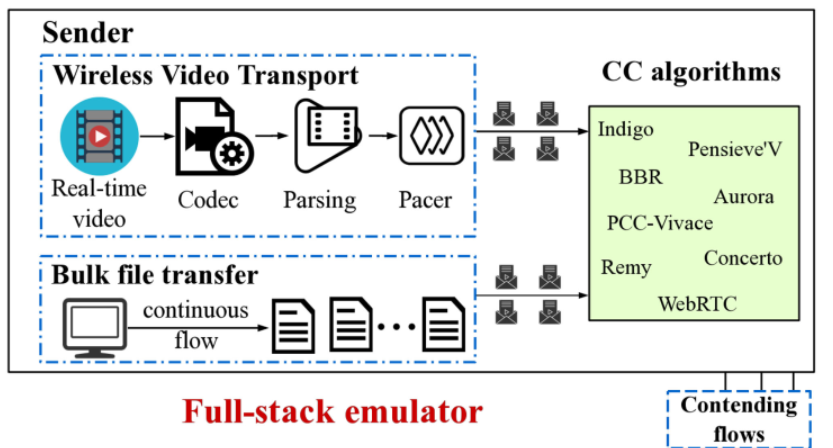
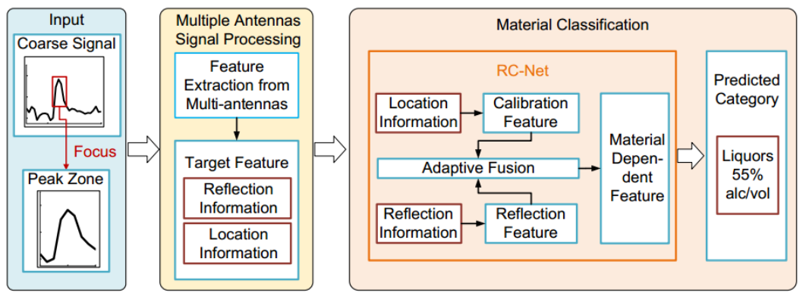
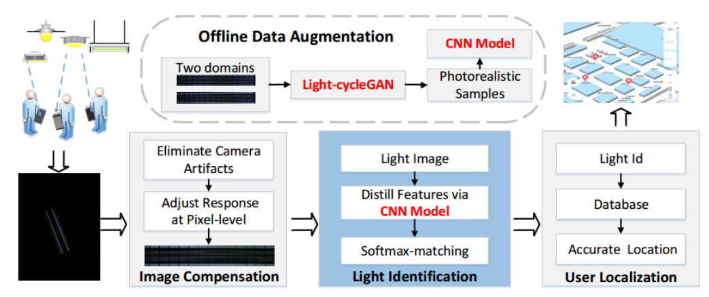
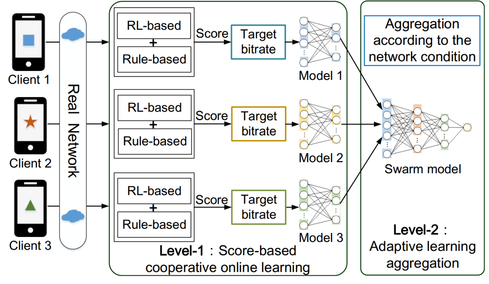
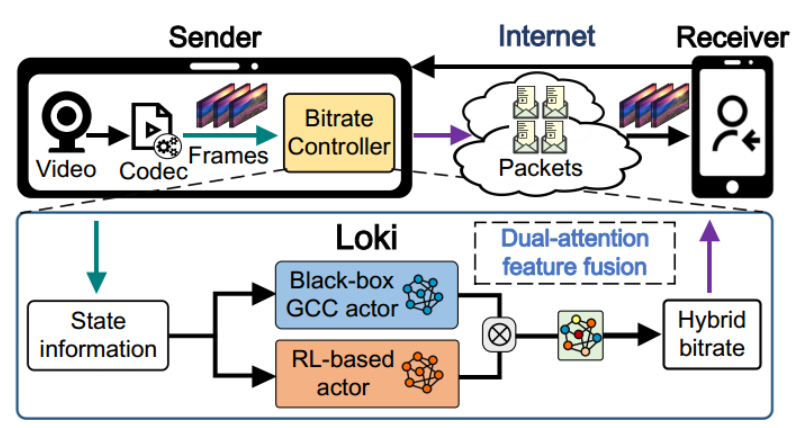
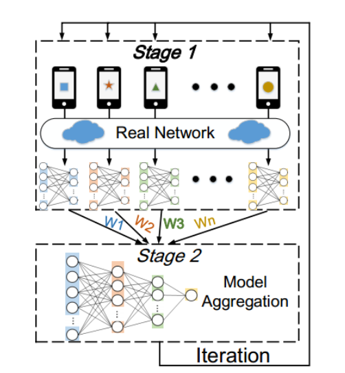
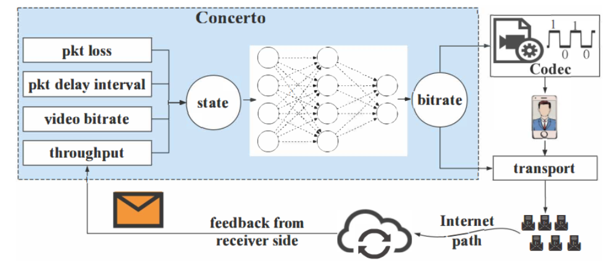

Huanhuan Zhang | 张欢欢
Researcher
School of Computer Science, Beijing University of Posts and Telecommunications
北京邮电大学 计算机学院(国家示范性软件学院), 特聘研究员（博士生导师、硕士生导师）
Email: zhanghuanhuan@bupt.edu.cn
Research Interest: Video streaming, network protocol, machine learning, mobile computing
Biography
Currently, I am a research in the School of Computer Science, Beijing University of Posts and Telecommunications (BUPT, China). Before that, I worked as a postdoctoral researcher in BUPT, advised by Prof. Aiguo Fei . I received my Ph.D. degree from Beijing University of Posts and Telecommunications in 2022 advised by Prof. Huadong Ma. My research work focuses on (i) learning-based video trasnmisison, e.g., live streaming, volumetric video; (ii) network ptotocol, i.e., congestion control, traffic adaption, 5G, LEO satellite network; (iii) mobile computing and sensing.
News
- [2024/07] Our paper "Tooth" was accepted by NSDI 2025!
- [2024/07] Our paper "SuperABR" was accepted by TCSVT!
- [2024/07] Our paper "AraLive" was accepted by ACM Multimedia 2024!
- [2024/03] Our paper "Spider" was accepted by IEEE/ACM ToN 2024!
- [2024/02] Our paper "Venus" was accepted by ACM MobiCom 2024!
- [2024/02] Our extended paper "Hermes" was accepted by IEEE TMC 2024!
- [2024/01] Our extended paper "Loki-plus" was accepted by IEEE/ACM ToN 2024!
- [2024/01] Our paper "mmArrhythmia" was accepted by ACM Ubicomp 2024!
- [2023/12] 张欢欢入选CCF优秀博士学位论文激励计划（CCF优博）!
- [2023/07] Our paper "Hermes" was accepted by ACM Multimedia 2023!
- [2023/05] Our paper "TrafAda" was accepted by IEEE/ACM ToN 2023!
- [2022/10] Our paper "BreathAnalyzer" was accepted by IEEE IoTJ 2022!
- [2022/09] Our paper "Tutti" was accepted by ACM MobiCom 2022!
- [2022/07] Huanhuan is awarded the fellowship of China National Postdoctoral Program for Innovative Talents (2022年度博士后创新人才支持计划)
- [2022/06] Huanhuan receives her Ph.D degree and is currently a postdoctoral researcher at BUPT
- [2022/06] Huanhuan is awarded the Outstanding Graduates of Beijing
- [2022/03] Best presentation award of A3 Foresight Program Workshop 2022
- [2021/08] Our paper "Loki" was accepted by ACM MobiCom 2021!
- [2021/08] Our paper "Arsenal" was accepted by IEEE TVT 2021!
- [2021/08] The distinguished panelist in ACM TURC SIGMOBILE China symposium 2021
- [2021/07] Our paper "FG-LiquID" was accepted by ACM Ubicomp/IMWUT 2021!
- [2020/08] Our paper "OnRL" was accepted by ACM MobiCom 2020!
- [2019/08] Our paper "Concerto" was accepted by ACM MobiCom 2019!
[NSDI 2025] Tooth: Toward Optimal Balance of Video QoE and Redundancy Cost by Fine-Grained FEC in Cloud Gaming Streaming [PDF]
Congkai An, Huanhuan Zhang, Shibo Wang, Jingyang Kang, Anfu Zhou, Liang Liu, Huadong Ma, Zili Meng (HKUST), Delei Ma, Yusheng Dong, Xiaogang Lei the 22nd USENIX Symposium on Networked Systems Design and Implementation (NSDI 2025 Fall)[AAAI 2025] Towards Efficient Object Re-Identification with A Novel Cloud-Edge Collaborative Framework [PDF]
Chuanming Wang, Yuxin Yang, Mengshi Qi, Huanhuan Zhang, Huadong Ma
The 39th Annual AAAI Conference on Artificial Intelligence (AAAI 2025)[TCSVT 2024] Enhancing QoE of Adaptive Video Streaming by Generating Fine-grained Throughput [PDF]
Congakai An, Huanhuan Zhang, Jingyang Kang, Zhuo Liu, Anfu Zhou, Liang Liu, Huadong Ma
IEEE Transactions on Circuits and Systems for Video Technology (TCSVT, SCI-Q1)[MM 2024] AraLive: Automatic Reward Adaption for Learning-based Live Video Streaming [PDF]
Huanhuan Zhang, Zhuo Liu, Haotian Li, Anfu Zhou, Chuanming Wang, Huadong Ma
ACM Multimedia (MM, CCF-A)[ToN 2024] Reviving Peer-to-Peer Networking for Scalable Crowdsourced Live Video Streaming [PDF]
Huanhuan Zhang, Congkai An, Anfu Zhou, Chaoyue Li, Xi Liu, Jialiang Pei, Yifan Zhu, Liang Liu, Huadong Ma
ACM Transactions on Networking (ToN, CCF-A)[MobiCom 2024] Venus: Enhancing QoE of Crowdsourced Live Video Streaming by Exploiting Multiflow Viewer Assistance [PDF]
Huanhuan Zhang, Congkai An, Anfu Zhou, Yifan Zhu, Weilin Sun, Yixuan Lu, Jiahao Chen, Liang Liu, Huadong Ma, Aiguo Fei
The 30th Annual International Conference on Mobile Computing and Networking (ACM MobiCom 2024, CCF A)[ToN 2024] Towards Optimal Live Video Streaming QoE: A Deep Feature-Fusion Approach [PDF]
Huanhuan Zhang, Anfu Zhou, Guangping Wang, Chaoyue Li, Huadong Ma
IEEE/ACM Transactions on Networking (ToN, CCF-A)[TMC 2024] Bandwidth-Efficient Mobile Volumetric Video Streaming by Exploiting Inter-Frame Correlation [PDF]
Yizong Wang, Dong Zhao, Huanhuan Zhang, Teng Gao, Zixuan Guo, Chenghao Huang, Huadong Ma
IEEE Transactions on Mobile Computing (TMC 2024, CCF A)[Ubicomp/IMWUT 2024] mmArrhythmia: Contactless Arrhythmia Detection via mmWave Sensing [PDF]
Langcheng Zhao, Rui Lyu, Qi Lin, Anfu Zhou, Huanhuan Zhang, Jingjia Wang, Chunli Shao, Yida Tang, Huadong Ma
In ACM International Joint Conference on Pervasive and Ubiquitous Computing (Ubicomp/IMWUT 2024, CCF A)[ACM IoTJ 2023] airBP: Monitor Your Blood Pressure with Millimeter-Wave in the Air [PDF]
Yumeng Liang, Anfu Zhou, Xinzhe Wen, Wei Huang, Pu Shi, Lingyu Pu, Huanhuan Zhang, Huadong Ma
ACM Trans. Internet Things 2023[MM 2023] Hermes: Leveraging Implicit Inter-Frame Correlation for Bandwidth-Efficient Mobile Volumetric Video Streaming [PDF]
Yizong Wang, Dong Zhao, Huanhuan Zhang, Chenghao Huang, Teng Gao, Zixuan Guo, Liming Pang, Huadong Ma
ACM Multimedia 2023 (CCF-A)[ToN 2023] TrafAda: Cost-aware Traffic Adaptation for Maximizing Bitrates in Live Streaming [PDF]
Yizong Wang, Dong Zhao, Chenghao Huang, Fuyu Yang, Teng Gao, Anfu Zhou, Huanhuan Zhang, Huadong Ma, Yang Du, Aiyun Chen
IEEE/ACM Transactions on Networking (ToN, CCF-A)- [计算机研究与发展] 视频云网平台中智能算法版权管理方法 [PDF]
张欢欢, 安聪凯, 赵朗程, 周安福, 马华东, 袁艺（中国电信）, 曹宁（中国电信）
计算机研究与发展, CCF A类中文科技推荐期刊, 2023 - [物联网学报] 基于强化学习的实时视频流控与移动终端训练方法研究 [PDF]
张欢欢, 周安福, 马华东
物联网学报, 2022 [IoTJ 2022] Robust Respiratory Rate Monitoring Using Smartwatch Photoplethysmography [PDF]
Langcheng Zhao, Fenglin Zhang, Huanhuan Zhang, Yumeng Liang, Anfu Zhou, Huadong Ma
IEEE INTERNET OF THINGS JOURNAL (IoTJ, SCI-Q1)[Mobicom 2022] Tutti: Coupling 5G RAN and Mobile Edge Computing for Latency-critical Video Analytics [PDF]
Dongzhu Xu, Anfu Zhou, Guixian Wang, Huanhuan Zhang, Xiangyu Li, Jialiang Pei, Huadong Ma
The 28th Annual International Conference on Mobile Computing and Networking (ACM MobiCom 2022, CCF A)[TMC 2022] Improving Mobile Interactive Video QoE Via Two-level Online Cooperative Learning [PDF]
Huanhuan Zhang, Anfu Zhou, Huadong Ma
IEEE Transactions on Mobile Computing (TMC 2022, CCF A)[Mobicom 2021] Loki: Improving Long Tail Performance of Learning-Based Real-Time Video Adaptation by Fusing Rule-Based Models [PDF]
Huanhuan Zhang, Anfu Zhou, Yuhan Hu, Chaoyue Li, Guangping Wang, Xinyu Zhang, Huadong Ma, Leilei Wu, Aiyun Chen, Changhui Wu
The 27th Annual International Conference on Mobile Computing and Networking (ACM MobiCom 2021, CCF A)

[TVT 2021] Arsenal: Understanding Learning-based Wireless Video Transport via In-depth Evaluation [PDF]
Huanhuan Zhang, Anfu Zhou, Ruoxaun Ma, Jiamin Lu, Huadong Ma
The IEEE Transactions on Vehicular Technology (TVT, 2021)

[Ubicomp/IMWUT 2021] FG-LiquID: A Contact-less Fine-grained Liquid Identifer by Pushing the Limits of Millimeter-wave Sensing [PDF]
Yumeng Liang, Anfu Zhou, Huanhuan Zhang, Xinzhe Wen, Huadong Ma
In ACM International Joint Conference on Pervasive and Ubiquitous Computing (Ubicomp/IMWUT 2021, CCF A)[Mobicom 2020] OnRL: Improving Mobile Video Telephony via Online Reinforcement Learning [Link]
Huanhuan Zhang, Anfu Zhou, Jiamin Lu, Ruoxuan Ma, Yuhan Hu, Cong Li, Xinyu Zhang, Huadong Ma, Xiaojiang Chen
The 26th Annual International Conference on Mobile Computing and Networking, ACM MobiCom 2020, CCF A (Acceptance Rate: 16.1%)- [CWSN 2020] 基于强化学习的视频拥塞控制算法评测研究
Huanhuan Zhang, Jiamin Lu, Anfu Zhou, Huadong Ma
The 14th China Conference on Internet of Things (Wireless Sensor Network), Excellent Paper Award [Mobicom 2019] Learning to Coordinate Video Codec with Transport Protocol for Mobile Video Telephony [PDF]
Anfu Zhou, Huanhuan Zhang, Guangyuan Su, Leilei Wu, Ruoxuan Ma, Zhen Meng, Xinyu Zhang, Xiufeng Xie, Huadong Ma, Xiaojiang Chen
The 25th Annual International Conference on Mobile Computing and Networking, ACM MobiCom 2019, CCF A (Acceptance Rate: 18.9%)[Mobicom 2019 Poster] Optimizing Mobile Video Telephony Using Deep Imitation Learning [PDF]
Anfu Zhou, Huanhuan Zhang, Guangyuan Su, Leilei Wu, Ruoxuan Ma, Zhen Meng, Xinyu Zhang, Xiufeng Xie, Huadong Ma, Xiaojiang Chen
The 25th Annual International Conference on Mobile Computing and Networking (ACM MobiCom 2019, Poster)

[Ubicomp/IMWUT 2019] Learning to Recognize Unmodified Lights with Invisible Features [PDF]
Huanhuan Zhang, Anfu Zhou, Dongzhu Xu, Shaoqing Xu, Xinyu Zhang, Huadong Ma
In ACM International Joint Conference on Pervasive and Ubiquitous Computing (Ubicomp/IMWUT 2019, CCF A)- Reviewer: TMM, JSAC, TMC, MTAP, MM, etc.
- Member of the Organizing Committee in CWSN 2022, CWSN 2023, CWSN 2024
- 中国计算机学会优秀博士学位论文激励计划(CCF优博), 2023
- 人社部博士后创新人才支持计划 (博新计划), 2022
- The Outstanding Ph.D. thesis of BUPT (北京邮电大学优秀博士学位论文), 2022
- The Outstanding Graduates of Beijing (北京市优秀毕业生), 2022
- Best presentation award of A3 Foresight Program Workshop 2022
- CWSN 2020, Excellent Paper Award, 2020
- National Scholarship for Doctoral Students, 2020
- The First Prize Scholarship, 2019, 2020, 2021
- National Scholarship for Encouragement, 2016
Publications
2024
2024
2023
2022
-

2021
-

2020
-

2019
-
